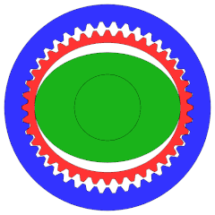
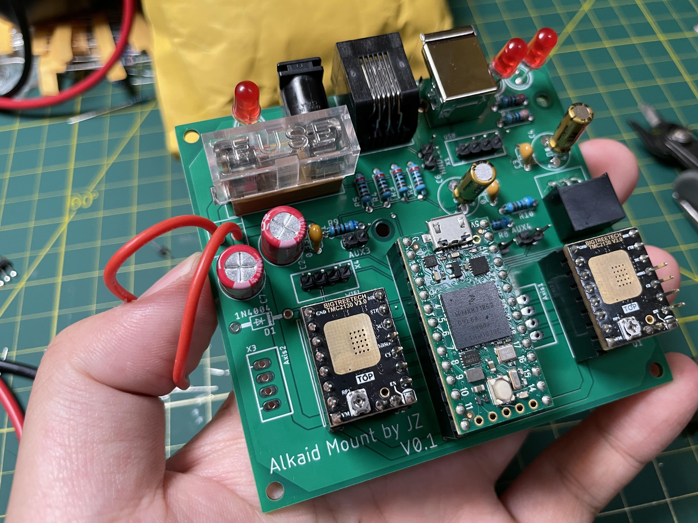
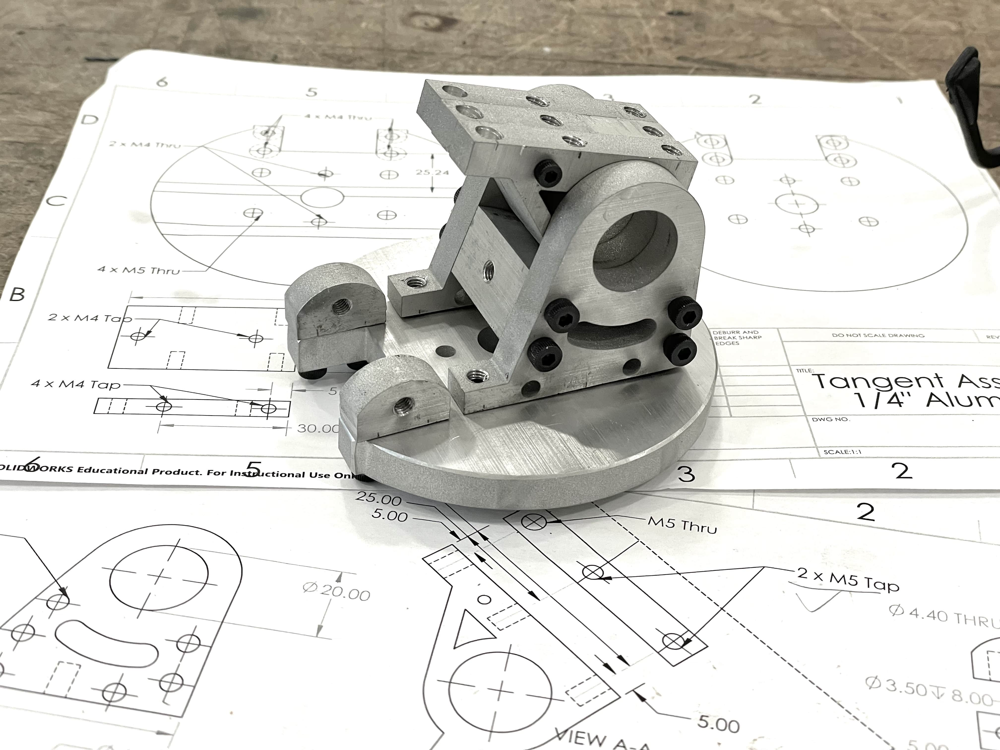
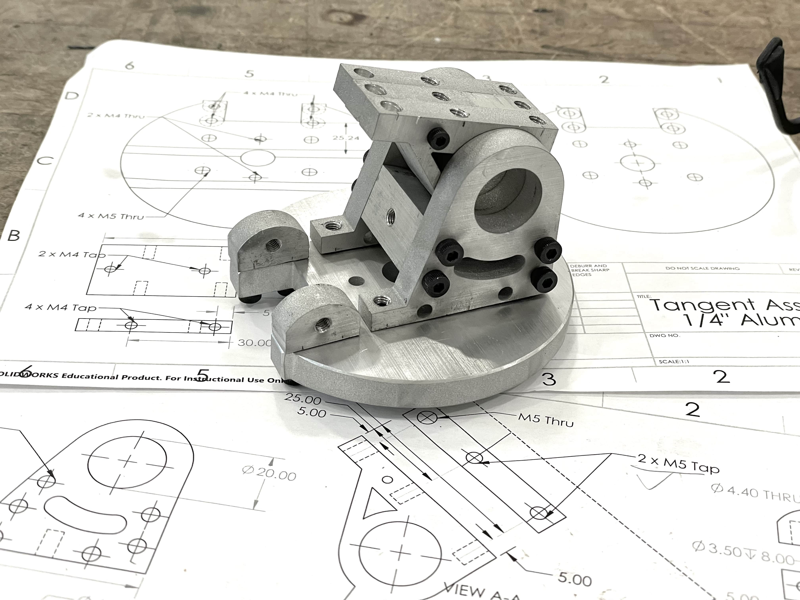
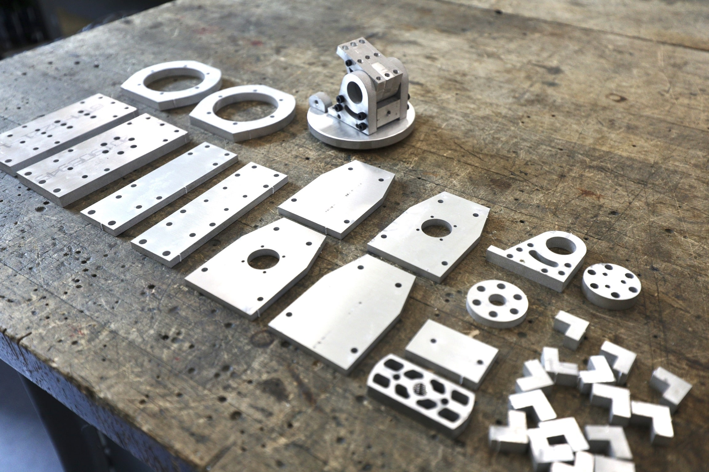
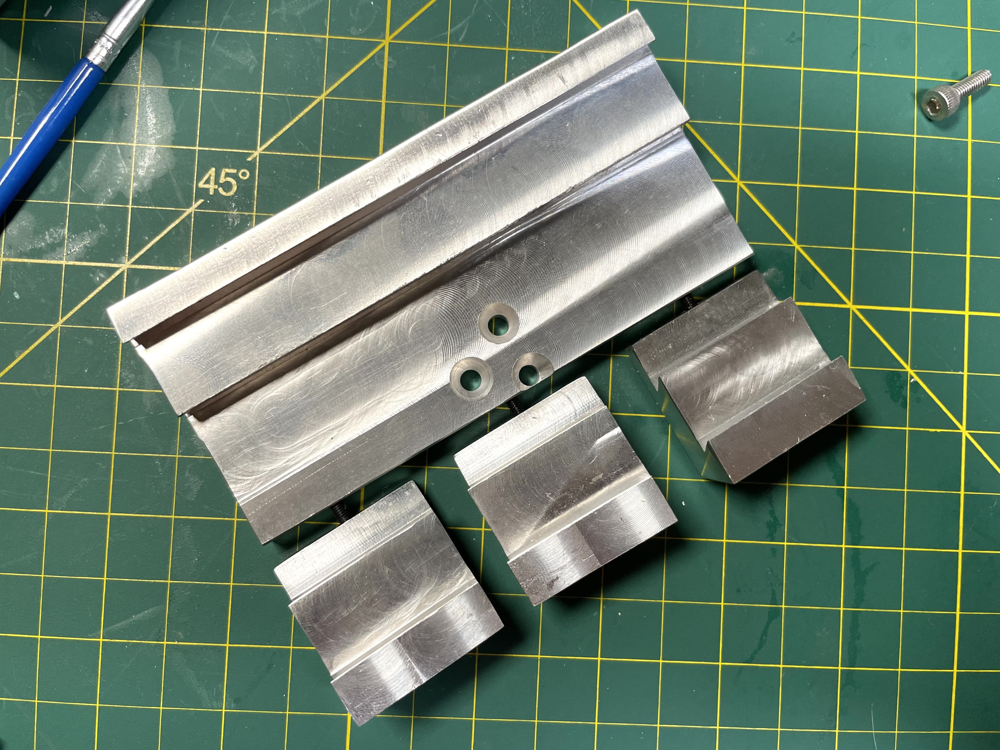
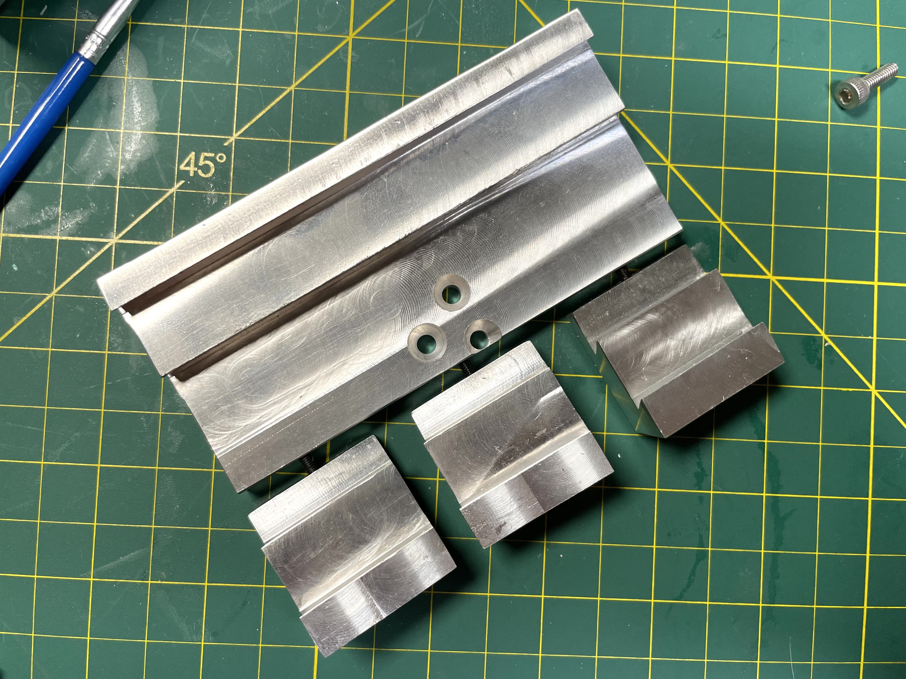

DIY equatorial mount with HarmonicDrive
Published:
Final Update Oct. 2022
The mount is finally finished! The finished assembly weights ~16lbs. I tested it with a ~15lbs unbalanced setup and a ~25lbs balanced setup and it worked beautifully.

All design files are released on GitHub. The building process was documented here, as well as on Youtube and BiliBili.
After getting trapped deeper and deeper into this hobby I finally started looking at my mount and thinking about replacing it… (Sirius EQ-G and I’ve only been in this hobby for 3 months!) I really appreciate the EQ-G’s relatively light weight and fear that a heavier mount might destroy my enthusiasm.
As a mechanical engineer (well not really, I really work more on control/learning stuff:) what can be more fun than building one by myself? So I ordered two HDs off eBay for ~&dollar 1400 (the same model sells for ~ &dollar 1.3k new each).
What is HarmonicDrive and why using it?
HDs, or more accurately speaking, strain wave gearing, is a kind of gearing mechanism that generates much more torque than other common gearing (because it has much more teeth engaged at a time), while having basically zero backlash (because it utilizes deformation - kind of similar to belts which are believed to be more or less backlash-less but HDs use deformable spring metal which is better than belts even if they are filled with steel) - or, tldr: it can drive much heavier load WITHOUT the need of counterweights!
Here is a nice GIF of how strain wave gearing works

and here is a youtube video from HarmonicDrive that tells more details
(07/04) Design
I have mostly finished the drawing of the metal backbone. Most of the parts will be made with 1/4” and 3/8” 6061 aluminum alloy. I’m trying to make the design such that I can waterjet as many parts as possible - I do have access to several really good Haas CNC machines at MIT, but I’m not sure if it’s totally okay if I use them for my DIY projects (however, according to the lab manager: “technically what you make here should be for your research but what you do is none of my business” plus a wink.) The current design is all waterjet-able except the dovetail clamp.


Hopefully I’ll be free enough next week to start making some chips! (well not really, since they will mostly be waterjetted:)
(07/07) PCB
I finally finished the PCB design, and sent it to JLCPCB to manufacture… It was based on the
design of the MiniPCB2 from OnStep, however even the MiniPCB has a “Mini” in its name, it’s
still too big. My design has two TMC2130 stepper drivers, one PEC (Periodic Error Correction)
switch connector, two extra endstop switches, a RJ11 (6 pin telescope port) connector for a hand
controller. The microcontroller is a Teensy 4.0. Should be sufficiently fast. It doesn’t have a
WiFi module built in but I put a connector there in case I decide to add one in the future - but
I really can’t think of a reason for it now. 
Updated 07/15
The PCB arrived! It only took the manufacture in China less than 24hrs to manufacture this PCB, and DHL shipped it to my doorsteps in 2 business days plus a weekend. That’s impressive. This is how it looks now after the soldering is done. 

I did a test with both motors connected and it worked flawlessly. Good job OnStep!
3D Printed Shells
Here is my first attempt to design a shell for my mount’s skeleton - well I admit it’s a bit ugly… Too boxy, I guess. You can see the housing for the PCB on the RA axis.

Everything weights about 5.5kg now - 4 kg for the sheleton plus motors plus gears, 1 kg for bolts (lol), and the rest for the 4mm shells printed with ABS.
Waterjet first attempt
Okay I admit this is actually my first time to use a waterjet - after I finished all the design that was built around waterjetting. Probably should have tested it before designing everything. Fortunately the result turns out to be very good. I’m very happy with the dimensional accuracy - the error is within 0.1mm. The only issue is that the cut is not 100% vertical. The bottom surface is about 0.1mm longer than the top surface on a 3/8” (or ~10mm) piece. Not good but not too bad. I’ll worry a bit about squareness but it should be fine since I have a lot of reinforcements.


Removing the pieces and sanding the tabs are painful. Now I learned that one tab is really sufficient for a 10mm plate.

Okay now that waterjetting works, I placed the order for almost everything. My new 1/4” aluminum plates should arrive next week.
Tangent assembly
Because waterjeting is only 2D, all the side holes need to be manually drilled and tapped. It
took me some trial and error to find a balance between speed and efficiency. Here is the test
assembly for the tangent (the base for the mount) 
 

It is not finished though. This is only a test assembly, and none of the screws are fastened (so you can see a lot of gaps). I’ll sand the surface and debur the edges after test assembling the entire mount.
It turns out that the manually drilled side holes are accurate enough - one piece is slightly off and I need to make another one of it, but overall it’s pretty good.
Waterjeting done
Today I finally finished waterjeting all the pieces - actually it didn’t take that long. I just really don’t enjoy staying in the waterjet room.  This picture was taken before the tabs were sanded off. The next step will be drilling & tapping side holes on them. Gonna be a lot of work for the weekend or next week:)
Drilling, tapping, lathe, and milling
After spending almost every night 5-8pm last week in the machine shop, all the manual work on the
metal parts is done now. 
It turns out that the dovetail clamp took the most amount of time to machine. I need to cut off a big chunk with endmills and cut the dovetail slot (the triangle) very slowly.
 

Assembly
Finally it’s the final assembly! Some screws are still on its way, and I haven’t 3D printed the shell and electronics compartment, so I’m only test fitting everything without tighten any screws.

It turns out that I might have overengineered it… Both 3/8” and 1/4” alumiunm are stronger (and heavier) than I thought, and I don’t think I need all the screws and any of the L-shape supports to achieve enough rigidity. All the screws go in smoothly. I was worrying about the accuracy of those manually drilled side-holes, but they seem to be good enough.
One last part to machine is the mount for a 20mm shaft which accepts the counterweights. Maybe I’ll also want the shaft itself to be machined from aluminum - but I have a 20mm carbon fiber tube at home and maybe I’ll just use that.
First power on testing
This is exciting! Nothing exploded, so it’s good. Even better, everything seems to be working well - both motors, WiFi, ASCOM driver, web server…
Final testing


For more details and results, checkout my youtube video.
Tracking performance
I haven’t been able to rigorously test the mount and collect enough data. The mount also needs to be calibrated (collect many nights’ data to reduce periodic error). Boston is almost in winter now and it’s getting colder. I’ll add this section when I have the data.